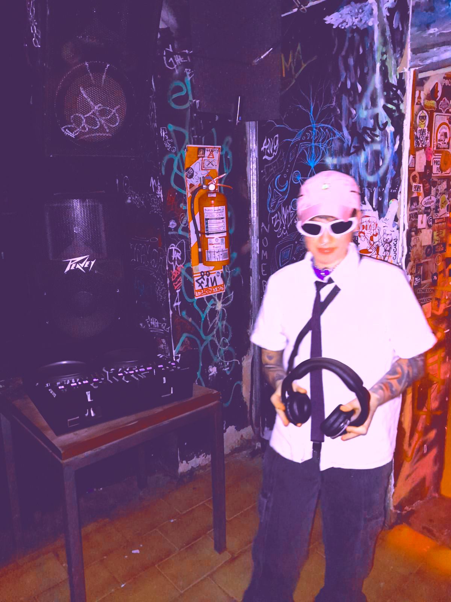

AKA: NEOGEO222
Soy un DJ y artista multimedia enfocado en la creación de experiencias estéticas contemporáneas a través de la música y la experimentación tecnológica. Mi estilo explora paisajes sonoros únicos que desafían las convenciones y promueven la inclusión y representación dentro del arte. Mi trabajo combina la música electrónica con elementos visuales innovadores.
